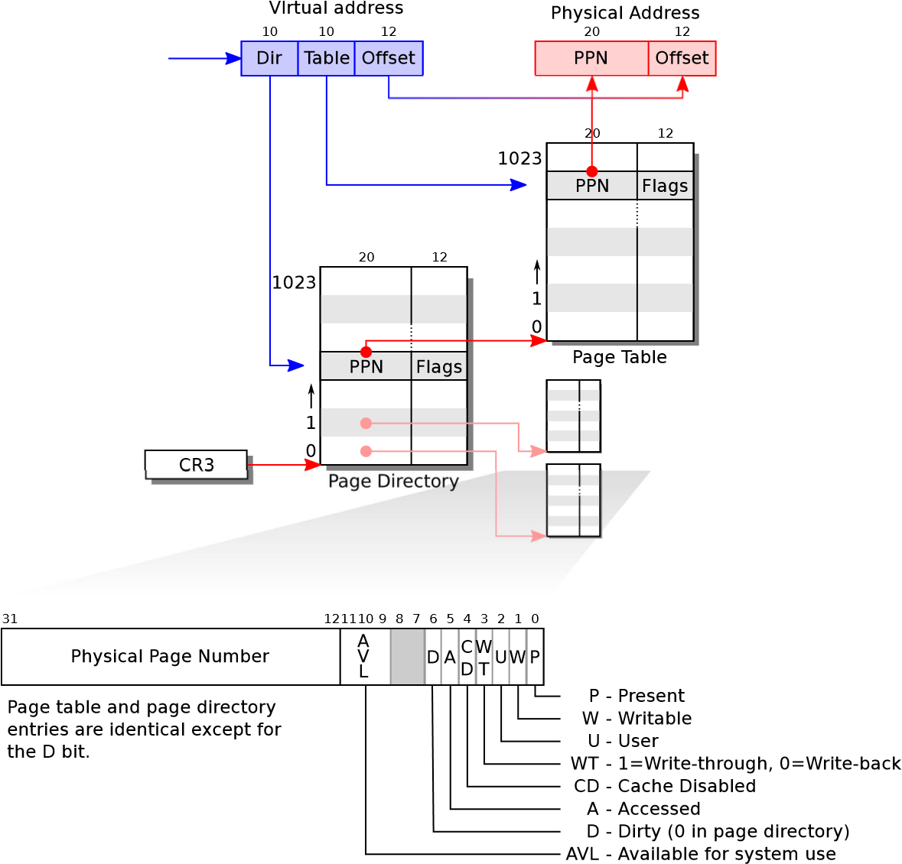

Chapter 2
Page tables are the mechanism through which the operating system controls what memory addresses mean. They allow xv6 to multiplex the address spaces of different processes onto a single physical memory, and to protect the memories of different processes. The level of indirection provided by page tables is also a source for many neat tricks. xv6 uses page tables primarily to multiplex address spaces and to protect memory. It also uses a few simple page-table tricks: mapping the same memory (the kernel) in several address spaces, mapping the same memory more than once in one address space (each user page is also mapped into the kernel’s physical view of memory), and guarding a user stack with an unmapped page. The rest of this chapter explains the page tables that the x86 hardware provides and how xv6 uses them.
As a reminder, x86 instructions (both user and kernel) manipulate virtual addresses. The machine’s RAM, or physical memory, is indexed with physical addresses. The x86 page table hardware connects these two kinds of addresses, by mapping each virtual address to a physical address.
An x86 page table is logically an array of 2^20 (1,048,576) page table entries (PTEs). Each PTE contains a 20-bit physical page number (PPN) and some flags. The paging hardware translates a virtual address by using its top 20 bits to index into the page table to find a PTE, and replacing the address’s top 20 bits with the PPN in the PTE. The paging hardware copies the low 12 bits unchanged from the virtual to the translated physical address. Thus a page table gives the operating system control over virtual-to-physical address translations at the granularity of aligned chunks of 4096 (2^12) bytes. Such a chunk is called a page.
As shown in Figure 2-1, the actual translation happens in two steps. A page table is stored in physical memory as a two-level tree. The root of the tree is a 4096-byte page directory that contains 1024 PTE-like references to page table pages. Each page table page is an array of 1024 32-bit PTEs. The paging hardware uses the top 10 bits of a virtual address to select a page directory entry. If the page directory entry is present, the paging hardware uses the next 10 bits of the virtual address to select a PTE from the page table page that the page directory entry refers to. If either the page directory entry or the PTE is not present, the paging hardware raises a fault. This two-level structure allows a page table to omit entire page table pages in the common case in which large ranges of virtual addresses have no mappings.
Each PTE contains flag bits that tell the paging hardware how the associated virtual address is allowed to be used. PTE_P indicates whether the PTE is present: if it is not set, a reference to the page causes a fault (i.e. is not allowed). PTE_W controls

Figure 2-1. x86 page table hardware.
whether instructions are allowed to issue writes to the page; if not set, only reads and instruction fetches are allowed. PTE_U controls whether user programs are allowed to use the page; if clear, only the kernel is allowed to use the page. Figure 2-1 shows how it all works. The flags and all other page hardware related structures are defined in mmu.h (0700).
A few notes about terms. Physical memory refers to storage cells in DRAM. A byte of physical memory has an address, called a physical address. Instructions use only virtual addresses, which the paging hardware translates to physical addresses, and then sends to the DRAM hardware to read or write storage. At this level of discussion there is no such thing as virtual memory, only virtual addresses.
The page table created by entry has enough mappings to allow the kernel’s C code to start running. However, main immediately changes to a new page table by calling kvmalloc (1857), because kernel has a more elaborate plan for describing process address spaces.
Each process has a separate page table, and xv6 tells the page table hardware to switch page tables when xv6 switches between processes. As shown in Figure 2-2, a process’s user memory starts at virtual address zero and can grow up to KERNBASE, allowing a process to address up to 2 GB of memory. The file memlayout.h (0200) declares the constants for xv6’s memory layout, and macros to convert virtual to physical addresses.
When a process asks xv6 for more memory, xv6 first finds free physical pages to provide the storage, and then adds PTEs to the process’s page table that point to the new physical pages. xv6 sets the PTE_U, PTE_W, and PTE_P flags in these PTEs. Most processes do not use the entire user address space; xv6 leaves PTE_P clear in unused PTEs. Different processes’ page tables translate user addresses to different pages of physical memory, so that each process has private user memory.
Xv6 includes all mappings needed for the kernel to run in every process’s page table; these mappings all appear above KERNBASE. It maps virtual addresses KERNBASE:KERNBASE+PHYSTOP to 0:PHYSTOP. One reason for this mapping is so that the kernel can use its own instructions and data. Another reason is that the kernel sometimes needs to be able to write a given page of physical memory, for example when creating page table pages; having every physical page appear at a predictable virtual address makes this convenient. A defect of this arrangement is that xv6 cannot make use of more than 2 GB of physical memory. Some devices that use memory-mapped I/O appear at physical addresses starting at 0xFE000000, so xv6 page tables including a direct mapping for them. Xv6 does not set the PTE_U flag in the PTEs above KERNBASE, so only the kernel can use them.
0
User data
User text
User stack
Program data & heap
+ 0x100000
Kernel text
end
KERNBASE
Kernel data
Gig
4
0
RW--
RW-
RWU
Device memory
xFE
0
000000
Free memory
RW-
R--
Virtual
0x100000
PHYSTOP
Devices
Extended memory
K
640
I/O space
Base memory
Physical
4
Gig
RWU
RWU
PAGESIZE
RW-
Figure 2-2
. Layout of a virtual address space and the physical address space.
0
User data
User text
User stack
Program data & heap
+ 0x100000
Kernel text
end
KERNBASE
Kernel data
Gig
4
0
RW--
RW-
RWU
Device memory
xFE
0
000000
Free memory
RW-
R--
Virtual
0x100000
PHYSTOP
Devices
Extended memory
K
640
I/O space
Base memory
Physical
4
Gig
RWU
RWU
PAGESIZE
RW-
Figure 2-2
. Layout of a virtual address space and the physical address space.
Having every process’s page table contain mappings for both user memory and
the entire kernel is convenient when switching from user code to kernel code during system calls and interrupts: such switches do not require page table switches. For the most part the kernel does not have its own page table; it is almost always borrowing some process’s page table.
To review, xv6 ensures that each process can only use its own memory, and that each process sees its memory as having contiguous virtual addresses starting at zero. xv6 implements the first by setting the PTE_U bit only on PTEs of virtual addresses that refer to the process’s own memory. It implements the second using the ability of page tables to translate successive virtual addresses to whatever physical pages happen to be allocated to the process.
main calls kvmalloc (1857) to create and switch to a page table with the mappings above KERNBASE required for the kernel to run. Most of the work happens in setupkvm (1837). It first allocates a page of memory to hold the page directory. Then it calls mappages to install the translations that the kernel needs, which are described in the kmap (1828) array. The translations include the kernel’s instructions and data, physical memory up to PHYSTOP, and memory ranges which are actually I/O devices. setupkvm does not install any mappings for the user memory; this will happen later.
mappages (1779) installs mappings into a page table for a range of virtual addresses to a corresponding range of physical addresses. It does this separately for each virtual address in the range, at page intervals. For each virtual address to be mapped, mappages calls walkpgdir to find the address of the PTE for that address. It then initializes the PTE to hold the relevant physical page number, the desired permissions ( PTE_W and/or PTE_U), and PTE_P to mark the PTE as valid (1791).
walkpgdir (1754) mimics the actions of the x86 paging hardware as it looks up the PTE for a virtual address (see Figure 2-1). walkpgdir uses the upper 10 bits of the virtual address to find the page directory entry (1759). If the page directory entry isn’t present, then the required page table page hasn’t yet been allocated; if the alloc argument is set, walkpgdir allocates it and puts its physical address in the page directory. Finally it uses the next 10 bits of the virtual address to find the address of the PTE in the page table page (1772).
The kernel needs to allocate and free physical memory at run-time for page tables, process user memory, kernel stacks, and pipe buffers.
xv6 uses the physical memory between the end of the kernel and PHYSTOP for run-time allocation. It allocates and frees whole 4096-byte pages at a time. It keeps track of which pages are free by threading a linked list through the pages themselves. Allocation consists of removing a page from the linked list; freeing consists of adding the freed page to the list.
There is a bootstrap problem: all of physical memory must be mapped in order for the allocator to initialize the free list, but creating a page table with those mappings involves allocating page-table pages. xv6 solves this problem by using a separate page allocator during entry, which allocates memory just after the end of the kernel’s data segment. This allocator does not support freeing and is limited by the 4 MB mapping in the entrypgdir, but that is sufficient to allocate the first kernel page table.
The allocator’s data structure is a free list of physical memory pages that are available for allocation. Each free page’s list element is a struct run (3014). Where does the allocator get the memory to hold that data structure? It store each free page’s run structure in the free page itself, since there’s nothing else stored there. The free list is protected by a spin lock (3018-3022). The list and the lock are wrapped in a struct to make clear that the lock protects the fields in the struct. For now, ignore the lock and the calls to acquire and release; Chapter 4 will examine locking in detail.
The function main calls kinit1 and kinit2 to initialize the allocator (3030). The reason for having two calls is that for much of main one cannot use locks or memory above 4 megabytes. The call to kinit1 sets up for lock-less allocation in the first 4 megabytes, and the call to kinit2 enables locking and arranges for more memory to be allocatable. main ought to determine how much physical memory is available, but this turns out to be difficult on the x86. Instead it assumes that the machine has 240 megabytes (PHYSTOP) of physical memory, and uses all the memory between the end of the kernel and PHYSTOP as the initial pool of free memory. kinit1 and kinit2 call freerange to add memory to the free list via per-page calls to kfree. A PTE can only refer to a physical address that is aligned on a 4096-byte boundary (is a multiple of 4096), so freerange uses PGROUNDUP to ensure that it frees only aligned physical addresses. The allocator starts with no memory; these calls to kfree give it some to manage.
The allocator refers to physical pages by their virtual addresses as mapped in high memory, not by their physical addresses, which is why kinit uses p2v(PHYSTOP) to translate PHYSTOP (a physical address) to a virtual address. The allocator sometimes treats addresses as integers in order to perform arithmetic on them (e.g., traversing all pages in kinit), and sometimes uses addresses as pointers to read and write memory (e.g., manipulating the run structure stored in each page); this dual use of addresses is the main reason that the allocator code is full of C type casts. The other reason is that freeing and allocation inherently change the type of the memory.
The function kfree (3065) begins by setting every byte in the memory being freed to the value 1. This will cause code that uses memory after freeing it (uses ‘‘dangling references’’) to read garbage instead of the old valid contents; hopefully that will cause such code to break faster. Then kfree casts v to a pointer to struct run, records the old start of the free list in r->next, and sets the free list equal to r. kalloc removes and returns the first element in the free list.
Figure 2-3 shows the layout of the user memory of an executing process in xv6.
The heap is above the stack so that it can expand (with sbrk). The stack is a single page, and is shown with the initial contents as created by exec. Strings containing the command-line arguments, as well as an array of pointers to them, are at the very top of the stack. Just under that are values that allow a program to start at main as if the function call main(argc, argv) had just started. To guard a stack growing off the stack page, xv6 places a guard page right below the stack. The guard page is not mapped and so if the stack runs off the stack page, the hardware will generate an exception because it cannot translate the faulting address.
Exec is the system call that creates the user part of an address space. It initializes the user part of an address space from a file stored in the file system. Exec (6310) opens the named binary path using namei (6321), which is explained in Chapter 6. Then, it reads the ELF header. Xv6 applications are described in the widely-used ELF format, defined in elf.h. An ELF binary consists of an ELF header, struct elfhdr (0955), followed by a sequence of program section headers, struct proghdr (0974). Each proghdr describes a section of the application that must be loaded into memory; xv6 programs have only one program section header, but other systems might have separate sections for instructions and data.
0
KERNBASE
text
data
stack
heap
PAGESIZE
argument 0
argument N
0
address of argument 0
address of argument N
address of address of
argument 0
xFFFFFFF
0
(
empty
)
argc
...
...
nul-terminated string
argv[argc]
argv[0]
argv argument of main
argc argument of main
return PC for main
guard page
Figure 2-3
. Memory layout of a user process with its initial stack.
0
KERNBASE
text
data
stack
heap
PAGESIZE
argument 0
argument N
0
address of argument 0
address of argument N
address of address of
argument 0
xFFFFFFF
0
(
empty
)
argc
...
...
nul-terminated string
argv[argc]
argv[0]
argv argument of main
argc argument of main
return PC for main
guard page
Figure 2-3
. Memory layout of a user process with its initial stack.
The first step is a quick check that the file probably contains an ELF binary. An ELF binary starts with the four-byte ‘‘magic number’’ 0x7F, ’E’, ’L’, ’F’, or ELF_MAGIC (0952). If the ELF header has the right magic number, exec assumes that the binary is well-formed.
Exec allocates a new page table with no user mappings with setupkvm (6334), allocates memory for each ELF segment with allocuvm (6346), and loads each segment into memory with loaduvm (6348). allocuvm checks that the virtual addresses requested is below KERNBASE. loaduvm (1918) uses walkpgdir to find the physical address of the allocated memory at which to write each page of the ELF segment, and readi to read from the file.
The program section header for /init, the first user program created with exec, looks like this:
# objdump -p _init
_init: file format elf32-i386
Program Header:
LOAD off 0x00000054 vaddr 0x00000000 paddr 0x00000000 align 2**2 filesz 0x000008c0 memsz 0x000008cc flags rwx
The program section header’s filesz may be less than the memsz, indicating that the gap between them should be filled with zeroes (for C global variables) rather than read from the file. For /init, filesz is 2240 bytes and memsz is 2252 bytes, and thus allocuvm allocates enough physical memory to hold 2252 bytes, but reads only 2240 bytes from the file /init.
Now exec allocates and initializes the user stack. It allocates just one stack page. Exec copies the argument strings to the top of the stack one at a time, recording the pointers to them in ustack. It places a null pointer at the end of what will be the argv list passed to main. The first three entries in ustack are the fake return PC, argc, and argv pointer.
Exec places an inaccessible page just below the stack page, so that programs that try to use more than one page will fault. This inaccessible page also allows exec to deal with arguments that are too large; in that situation, the copyout function that exec uses to copy arguments to the stack will notice that the destination page in not accessible, and will return –1.
During the preparation of the new memory image, if exec detects an error like an invalid program segment, it jumps to the label bad, frees the new image, and returns –1. Exec must wait to free the old image until it is sure that the system call will succeed: if the old image is gone, the system call cannot return –1 to it. The only error cases in exec happen during the creation of the image. Once the image is complete, exec can install the new image (6394) and free the old one (6395). Finally, exec returns 0.
Like most operating systems, xv6 uses the paging hardware for memory protection and mapping. Most operating systems make far more sophisticated use of paging than xv6; for example, xv6 lacks demand paging from disk, copy-on-write fork, shared memory, lazily-allocated pages, and automatically extending stacks. The x86 supports address translation using segmentation (see Appendix B), but xv6 uses segments only for the common trick of implementing per-cpu variables such as proc that are at a fixed address but have different values on different CPUs (see seginit). Implementations of per-CPU (or per-thread) storage on non-segment architectures would dedicate a register to holding a pointer to the per-CPU data area, but the x86 has so few general registers that the extra effort required to use segmentation is worthwhile.
On machines with lots of memory it might make sense to use the x86’s 4 Mbyte ‘‘super pages.’’ Small pages make sense when physical memory is small, to allow allocation and page-out to disk with fine granularity. For example, if a program uses only 8 Kbyte of memory, giving it a 4 Mbyte physical page is wasteful. Larger pages make sense on machines with lots of RAM, and may reduce overhead for page-table manipulation. Xv6 uses super pages in one place: the initial page table (1311). The array initialization sets two of the 1024 PDEs, at indices zero and 512 (KERNBASE>>PDXSHIFT), leaving the other PDEs zero. Xv6 sets the PTE_PS bit in these two PDEs to mark them as super pages. The kernel also tells the paging hardware to allow super pages by setting the CR_PSE bit (Page Size Extension) in %cr4.
Xv6 should determine the actual RAM configuration, instead of assuming 240 MB. On the x86, there are at least three common algorithms: the first is to probe the physical address space looking for regions that behave like memory, preserving the values written to them; the second is to read the number of kilobytes of memory out of a known 16-bit location in the PC’s non-volatile RAM; and the third is to look in BIOS memory for a memory layout table left as part of the multiprocessor tables. Reading the memory layout table is complicated.
Memory allocation was a hot topic a long time ago, the basic problems being efficient use of limited memory and preparing for unknown future requests; see Knuth. Today people care more about speed than space-efficiency. In addition, a more elaborate kernel would likely allocate many different sizes of small blocks, rather than (as in xv6) just 4096-byte blocks; a real kernel allocator would need to handle small allocations as well as large ones.
Chapter 3
When running a process, a CPU executes the normal processor loop: read an instruction, advance the program counter, execute the instruction, repeat. But there are events on which control from a user program must transferred back to the kernel instead of executing the next instruction. These events include a device signaling that it wants attention, a user program doing something illegal (e.g., references a virtual address for which there is no PTE), or a user program asking the kernel for a service with a system call. There are three main challenges in handling these events: 1) the kernel must arrange that a processor switches from user mode to kernel mode (and back); 2) the kernel and devices must coordinate their parallel activities; and 3) the kernel must understand the interface of the devices well. Addressing these 3 challenges requires detailed understanding of hardware and careful programming, and can result in opaque kernel code. This chapter explains how xv6 addresses these three challenges.
With a system call a user program can ask for an operating system service, as we saw at the end of the last chapter. The term exception refers to an illegal program action that generates an interrupt. Examples of illegal programs actions include divide by zero, attempt to access memory for a PTE that is not present, and so on. The term interrupt refers to a signal generated by a hardware device, indicating that it needs attention of the operating system. For example, a clock chip may generate an interrupt every 100 msec to allow the kernel to implement time sharing. As another example, when the disk has read a block from disk, it generates an interrupt to alert the operating system that the block is ready to be retrieved.
The kernel handles all interrupts, rather than processes handling them, because in most cases only the kernel has the required privilege and state. For example, in order to time-slice among processes in response the clock interrupts, the kernel must be involved, if only to force uncooperative processes to yield the processor.
In all three cases, the operating system design must arrange for the following to happen. The system must save the processor’s registers for future transparent resume. The system must be set up for execution in the kernel. The system must chose a place for the kernel to start executing. The kernel must be able to retrieve information about the event, e.g., system call arguments. It must all be done securely; the system must maintain isolation of user processes and the kernel.
To achieve this goal the operating system must be aware of the details of how the hardware handles system calls, exceptions, and interrupts. In most processors these three events are handled by a single hardware mechanism. For example, on the x86, a program invokes a system call by generating an interrupt using the int instruction. Similarly, exceptions generate an interrupt too. Thus, if the operating system has a plan for interrupt handling, then the operating system can handle system calls and exceptions too.
The basic plan is as follows. An interrupts stops the normal processor loop and starts executing a new sequence called an interrupt handler. Before starting the interrupt handler, the processor saves its registers, so that the operating system can restore them when it returns from the interrupt. A challenge in the transition to and from the interrupt handler is that the processor should switch from user mode to kernel mode, and back.
A word on terminology: Although the official x86 term is interrupt, xv6 refers to all of these as traps, largely because it was the term used by the PDP11/40 and therefore is the conventional Unix term. This chapter uses the terms trap and interrupt interchangeably, but it is important to remember that traps are caused by the current process running on a processor (e.g., the process makes a system call and as a result generates a trap), and interrupts are caused by devices and may not be related to the currently running process. For example, a disk may generate an interrupt when it is done retrieving a block for one process, but at the time of the interrupt some other process may be running. This property of interrupts makes thinking about interrupts more difficult than thinking about traps, because interrupts happen concurrently with other activities. Both rely, however, on the same hardware mechanism to transfer control between user and kernel mode securely, which we will discuss next.
The x86 has 4 protection levels, numbered 0 (most privilege) to 3 (least privilege). In practice, most operating systems use only 2 levels: 0 and 3, which are then called kernel mode and user mode, respectively. The current privilege level with which the x86 executes instructions is stored in %cs register, in the field CPL.
On the x86, interrupt handlers are defined in the interrupt descriptor table (IDT). The IDT has 256 entries, each giving the %cs and %eip to be used when handling the corresponding interrupt.
To make a system call on the x86, a program invokes the int n instruction, where n specifies the index into the IDT. The int instruction performs the following steps:
only present on privilege change
error code
(
empty
)
ss
esp
eflags
cs
eip
esp
sp from task segment
error code
(
empty
)
ss
esp
eflags
cs
eip
esp
sp from task segment
Figure 3-1. Kernel stack after an int instruction.
The int instruction is a complex instruction, and one might wonder whether all these actions are necessary. The check CPL <= DPL allows the kernel to forbid systems for some privilege levels. For example, for a user program to execute int instruction succesfully, the DPL must be 3. If the user program doesn’t have the appropriate privilege, then int instruction will result in int 13, which is a general protection fault. As another example, the int instruction cannot use the user stack to save values, because the user might not have set up an appropriate stack so that hardware uses the stack specified in the task segments, which is setup in kernel mode.
Figure 3-1 shows the stack after an int instruction completes and there was a privilege-level change (the privilege level in the descriptor is lower than CPL). If the int instruction didn’t require a privilege-level change, the x86 won’t save %ss and %esp. After both cases, %eip is pointing to the address specified in the descriptor table, and the instruction at that address is the next instruction to be executed and the first instruction of the handler for int n. It is job of the operating system to implement these handlers, and below we will see what xv6 does.
An operating system can use the iret instruction to return from an int instruction. It pops the saved values during the int instruction from the stack, and resumes execution at the saved %eip.
Chapter 1 ended with initcode.S invoking a system call. Let’s look at that again (8213). The process pushed the arguments for an exec call on the process’s stack, and put the system call number in %eax. The system call numbers match the entries in the syscalls array, a table of function pointers (3600). We need to arrange that the int instruction switches the processor from user mode to kernel mode, that the kernel invokes the right kernel function (i.e., sys_exec), and that the kernel can retrieve the arguments for sys_exec. The next few subsections describes how xv6 arranges this for system calls, and then we will discover that we can reuse the same code for interrupts and exceptions.
Xv6 must set up the x86 hardware to do something sensible on encountering an int instruction, which causes the processor to generate a trap. The x86 allows for 256 different interrupts. Interrupts 0-31 are defined for software exceptions, like divide errors or attempts to access invalid memory addresses. Xv6 maps the 32 hardware interrupts to the range 32-63 and uses interrupt 64 as the system call interrupt.
Tvinit (3317), called from main, sets up the 256 entries in the table idt. Interrupt i is handled by the code at the address in vectors[i]. Each entry point is different, because the x86 does not provide the trap number to the interrupt handler. Using 256 different handlers is the only way to distinguish the 256 cases.
Tvinit handles T_SYSCALL, the user system call trap, specially: it specifies that the gate is of type ‘‘trap’’ by passing a value of 1 as second argument. Trap gates don’t clear the FL flag, allowing other interrupts during the system call handler.
The kernel also sets the system call gate privilege to DPL_USER, which allows a user program to generate the trap with an explicit int instruction. xv6 doesn’t allow processes to raise other interrupts (e.g., device interrupts) with int; if they try, they will encounter a general protection exception, which goes to vector 13.
When changing protection levels from user to kernel mode, the kernel shouldn’t use the stack of the user process, because it may not be valid. The user process may be malicious or contain an error that causes the user %esp to contain an address that is not part of the process’s user memory. Xv6 programs the x86 hardware to perform a stack switch on a trap by setting up a task segment descriptor through which the hardware loads a stack segment selector and a new value for %esp. The function switchuvm (1873) stores the address of the top of the kernel stack of the user process into the task segment descriptor.
When a trap occurs, the processor hardware does the following. If the processor was executing in user mode, it loads %esp and %ss from the task segment descriptor, pushes the old user %ss and %esp onto the new stack. If the processor was executing in kernel mode, none of the above happens. The processor then pushes the %eflags, %cs, and %eip registers. For some traps, the processor also pushes an error word. The processor then loads %eip and %cs from the relevant IDT entry.
xv6 uses a Perl script (3200) to generate the entry points that the IDT entries point to. Each entry pushes an error code if the processor didn’t, pushes the interrupt number, and then jumps to alltraps.
Alltraps (3254) continues to save processor registers: it pushes %ds, %es, %fs,
%gs, and the general-purpose registers (3255-3260). The result of this effort is that the kernel stack now contains a struct trapframe (0602) containing the processor registers at the time of the trap (see Figure 3-2). The processor pushes %ss, %esp, %eflags, %cs, and %eip. The processor or the trap vector pushes an error number, and alltraps pushes the rest. The trap frame contains all the information necessary to restore the user mode processor registers when the kernel returns to the current process, so that the processor can continue exactly as it was when the trap started. Recall from Chapter 2, that userinit build a trapframe by hand to achieve this goal (see Figure 1-4).
In the case of the first system call, the saved %eip is the address of the instruction right after the int instruction. %cs is the user code segment selector. %eflags is the content of the eflags register at the point of executing the int instruction. As part of saving the general-purpose registers, alltraps also saves %eax, which contains the system call number for the kernel to inspect later.
Now that the user mode processor registers are saved, alltraps can finishing setting up the processor to run kernel C code. The processor set the selectors %cs and
%ss before entering the handler; alltraps sets %ds and %es (3263-3265). It sets %fs and %gs to point at the SEG_KCPU per-CPU data segment (3266-3268).
Once the segments are set properly, alltraps can call the C trap handler trap. It pushes %esp, which points at the trap frame it just constructed, onto the stack as an argument to trap (3271). Then it calls trap (3272). After trap returns, alltraps pops the argument off the stack by adding to the stack pointer (3273) and then starts executing the code at label trapret. We traced through this code in Chapter 2 when the first user process ran it to exit to user space. The same sequence happens here: popping through the trap frame restores the user mode registers and then iret jumps back into user space.
The discussion so far has talked about traps occurring in user mode, but traps can also happen while the kernel is executing. In that case the hardware does not switch stacks or save the stack pointer or stack segment selector; otherwise the same steps occur as in traps from user mode, and the same xv6 trap handling code executes. When iret later restores a kernel mode %cs, the processor continues executing in kernel mode.
We saw in the last section that each handler sets up a trap frame and then calls the C function trap. Trap (3351) looks at the hardware trap number tf->trapno to decide why it has been called and what needs to be done. If the trap is T_SYSCALL, trap calls the system call handler syscall. We’ll revisit the two proc->killed checks in Chapter 5.
After checking for a system call, trap looks for hardware interrupts (which we discuss below). In addition to the expected hardware devices, a trap can be caused by a spurious interrupt, an unwanted hardware interrupt.
If the trap is not a system call and not a hardware device looking for attention, trap assumes it was caused by incorrect behavior (e.g., divide by zero) as part of the code that was executing before the trap. If the code that caused the trap was a user program, xv6 prints details and then sets cp->killed to remember to clean up the user process. We will look at how xv6 does this cleanup in Chapter 5.
If it was the kernel running, there must be a kernel bug: trap prints details about the surprise and then calls panic.
For system calls, trap invokes syscall (3625). Syscall loads the system call number from the trap frame, which contains the saved %eax, and indexes into the system call tables. For the first system call, %eax contains the value SYS_exec (3457), and syscall will invoke the SYS_exec’th entry of the system call table, which corresponds to invoking sys_exec.
Syscall records the return value of the system call function in %eax. When the trap returns to user space, it will load the values from cp->tf into the machine registers. Thus, when exec returns, it will return the value that the system call handler returned (3631). System calls conventionally return negative numbers to indicate errors, positive numbers for success. If the system call number is invalid, syscall prints an error and returns –1.
Later chapters will examine the implementation of particular system calls. This chapter is concerned with the mechanisms for system calls. There is one bit of mechanism left: finding the system call arguments. The helper functions argint and argptr, argstr retrieve the n’th system call argument, as either an integer, pointer, or a string. argint uses the user-space %esp register to locate the n’th argument: %esp points at the return address for the system call stub. The arguments are right above it, at %esp+4. Then the nth argument is at %esp+4+4*n.
argint calls fetchint to read the value at that address from user memory and write it to *ip. fetchint can simply cast the address to a pointer, because the user and the kernel share the same page table, but the kernel must verify that the pointer by the user is indeed a pointer in the user part of the address space. The kernel has set up the page-table hardware to make sure that the process cannot access memory outside its local private memory: if a user program tries to read or write memory at an address of p->sz or above, the processor will cause a segmentation trap, and trap will kill the process, as we saw above. Now though, the kernel is running and it can derefence any address that the user might have passed, so it must check explicitly that the address is below p->sz argptr is similar in purpose to argint: it interprets the nth system call argu-
ment. argptr calls argint to fetch the argument as an integer and then checks if the integer as a user pointer is indeed in the user part of the address space. Note that two checks occur during a call to code argptr . First, the user stack pointer is checked during the fetching of the argument. Then the argument, itself a user pointer, is checked. argstr is the final member of the system call argument trio. It interprets the nth argument as a pointer. It ensures that the pointer points at a NUL-terminated string and that the complete string is located below the end of the user part of the address space.
The system call implementations (for example, sysproc.c and sysfile.c) are typically wrappers: they decode the arguments using argint, argptr, and argstr and then call the real implementations. In chapter 2, sys_exec uses these functions to get at its arguments.
Devices on the motherboard can generate interrupts, and xv6 must setup the hardware to handle these interrupts. Without device support xv6 wouldn’t be usable; a user couldn’t type on the keyboard, a file system couldn’t store data on disk, etc. Fortunately, adding interrupts and support for simple devices doesn’t require much additional complexity. As we will see, interrupts can use the same code as for systems calls and exceptions.
Interrupts are similar to system calls, except devices generate them at any time. There is hardware on the motherboard to signal the CPU when a device needs attention (e.g., the user has typed a character on the keyboard). We must program the device to generate an interrupt, and arrange that a CPU receives the interrupt.
Let’s look at the timer device and timer interrupts. We would like the timer hardware to generate an interrupt, say, 100 times per second so that the kernel can track the passage of time and so the kernel can time-slice among multiple running processes. The choice of 100 times per second allows for decent interactive performance while not swamping the processor with handling interrupts.
Like the x86 processor itself, PC motherboards have evolved, and the way interrupts are provided has evolved too. The early boards had a simple programmable interrupt controler (called the PIC), and you can find the code to manage it in picirq.c.
With the advent of multiprocessor PC boards, a new way of handling interrupts was needed, because each CPU needs an interrupt controller to handle interrupts sent to it, and there must be a method for routing interrupts to processors. This way consists of two parts: a part that is in the I/O system (the IO APIC, ioapic.c), and a part that is attached to each processor (the local APIC, lapic.c). Xv6 is designed for a board with multiple processors, and each processor must be programmed to receive interrupts.
To also work correctly on uniprocessors, Xv6 programs the programmable interrupt controler (PIC) (7432). Each PIC can handle a maximum of 8 interrupts (i.e., devices) and multiplex them on the interrupt pin of the processor. To allow for more than 8 devices, PICs can be cascaded and typically boards have at least two. Using inb and outb instructions Xv6 programs the master to generate IRQ 0 through 7 and the slave to generate IRQ 8 through 16. Initially xv6 programs the PIC to mask all interrupts. The code in timer.c sets timer 1 and enables the timer interrupt on the PIC (8074). This description omits some of the details of programming the PIC. These details of the PIC (and the IOAPIC and LAPIC) are not important to this text but the interested reader can consult the manuals for each device, which are referenced in the source files.
On multiprocessors, xv6 must program the IOAPIC, and the LAPIC on each processor. The IO APIC has a table and the processor can program entries in the table through memory-mapped I/O, instead of using inb and outb instructions. During initialization, xv6 programs to map interrupt 0 to IRQ 0, and so on, but disables them all. Specific devices enable particular interrupts and say to which processor the interrupt should be routed. For example, xv6 routes keyboard interrupts to processor 0 (8016). Xv6 routes disk interrupts to the highest numbered processor on the system, as we will see below.
The timer chip is inside the LAPIC, so that each processor can receive timer interrupts independently. Xv6 sets it up in lapicinit (7151). The key line is the one that programs the timer (7164). This line tells the LAPIC to periodically generate an interrupt at IRQ_TIMER, which is IRQ 0. Line (7193) enables interrupts on a CPU’s LAPIC, which will cause it to deliver interrupts to the local processor.
A processor can control if it wants to receive interrupts through the IF flag in the eflags register. The instruction cli disables interrupts on the processor by clearing IF, and sti enables interrupts on a processor. Xv6 disables interrupts during booting of the main cpu (8912) and the other processors (1126). The scheduler on each processor enables interrupts (2714). To control that certain code fragments are not interrupted, xv6 disables interrupts during these code fragments (e.g., see switchuvm (1873)).
The timer interrupts through vector 32 (which xv6 chose to handle IRQ 0), which xv6 setup in idtinit (1265). The only difference between vector 32 and vector 64 (the one for system calls) is that vector 32 is an interrupt gate instead of a trap gate. Interrupt gates clear IF, so that the interrupted processor doesn’t receive interrupts while it is handling the current interrupt. From here on until trap, interrupts follow the same code path as system calls and exceptions, building up a trap frame.
Trap when it’s called for a time interrupt, does just two things: increment the ticks variable (3367), and call wakeup. The latter, as we will see in Chapter 5, may cause the interrupt to return in a different process.
A driver is the piece of code in an operating system that manages a particular device: it provides interrupt handlers for a device, causes a device to perform operations, causes a device to generate interrupts, etc. Driver code can be tricky to write because a driver executes concurrently with the device that it manages. In addition, the driver must understand the device’s interface (e.g., which I/O ports do what), and that interface can be complex and poorly documented.
The disk driver provides a good example in xv6. The disk driver copies data from and back to the disk. Disk hardware traditionally presents the data on the disk as a numbered sequence of 512-byte blocks (also called sectors): sector 0 is the first 512 bytes, sector 1 is the next, and so on. To represent disk sectors an operating system has a structure that corresponds to one sector. The data stored in this structure is often out of sync with the disk: it might have not yet been read in from disk (the disk is working on it but hasn’t returned the sector’s content yet), or it might have been updated but not yet written out. The driver must ensure that the rest of xv6 doesn’t get confused when the structure is out of sync with the disk.
The IDE device provides access to disks connected to the PC standard IDE controller. IDE is now falling out of fashion in favor of SCSI and SATA, but the interface is simple and lets us concentrate on the overall structure of a driver instead of the details of a particular piece of hardware.
The disk driver represent disk sectors with a data structure called a buffer, struct buf (3750). Each buffer represents the contents of one sector on a particular disk device. The dev and sector fields give the device and sector number and the data field is an in-memory copy of the disk sector.
The flags track the relationship between memory and disk: the B_VALID flag means that data has been read in, and the B_DIRTY flag means that data needs to be written out. The B_BUSY flag is a lock bit; it indicates that some process is using the buffer and other processes must not. When a buffer has the B_BUSY flag set, we say the buffer is locked.
The kernel initializes the disk driver at boot time by calling ideinit (4151) from main (1234). Ideinit calls picenable and ioapicenable to enable the IDE_IRQ interrupt (4156-4157). The call to picenable enables the interrupt on a uniprocessor; ioapicenable enables the interrupt on a multiprocessor, but only on the last CPU (ncpu-1): on a two-processor system, CPU 1 handles disk interrupts.
Next, ideinit probes the disk hardware. It begins by calling idewait (4158) to wait for the disk to be able to accept commands. A PC motherboard presents the status bits of the disk hardware on I/O port 0x1f7. Idewait (4133) polls the status bits until the busy bit (IDE_BSY) is clear and the ready bit (IDE_DRDY) is set.
Now that the disk controller is ready, ideinit can check how many disks are present. It assumes that disk 0 is present, because the boot loader and the kernel were both loaded from disk 0, but it must check for disk 1. It writes to I/O port 0x1f6 to select disk 1 and then waits a while for the status bit to show that the disk is ready
(4160-4167). If not, ideinit assumes the disk is absent.
After ideinit, the disk is not used again until the buffer cache calls iderw, which updates a locked buffer as indicated by the flags. If B_DIRTY is set, iderw writes the buffer to the disk; if B_VALID is not set, iderw reads the buffer from the disk.
Disk accesses typically take milliseconds, a long time for a processor. The boot loader issues disk read commands and reads the status bits repeatedly until the data is ready. This polling or busy waiting is fine in a boot loader, which has nothing better to do. In an operating system, however, it is more efficient to let another process run on the CPU and arrange to receive an interrupt when the disk operation has completed. Iderw takes this latter approach, keeping the list of pending disk requests in a queue and using interrupts to find out when each request has finished. Although iderw maintains a queue of requests, the simple IDE disk controller can only handle one operation at a time. The disk driver maintains the invariant that it has sent the buffer at the front of the queue to the disk hardware; the others are simply waiting their turn.
Iderw (4254) adds the buffer b to the end of the queue (4267-4271). If the buffer is at the front of the queue, iderw must send it to the disk hardware by calling idestart (4224-4226); otherwise the buffer will be started once the buffers ahead of it are taken care of.
Idestart (4175) issues either a read or a write for the buffer’s device and sector, according to the flags. If the operation is a write, idestart must supply the data now (4189) and the interrupt will signal that the data has been written to disk. If the operation is a read, the interrupt will signal that the data is ready, and the handler will read it. Note that idestart has detailed knowledge about the IDE device, and writes the right values at the right ports. If any of these outb statements is wrong, the IDE will do something differently than what we want. Getting these details right is one reason why writing device drivers is challenging.
Having added the request to the queue and started it if necessary, iderw must wait for the result. As discussed above, polling does not make efficient use of the CPU. Instead, iderw sleeps, waiting for the interrupt handler to record in the buffer’s flags that the operation is done (4278-4279). While this process is sleeping, xv6 will schedule other processes to keep the CPU busy.
Eventually, the disk will finish its operation and trigger an interrupt. trap will call ideintr to handle it (3374). Ideintr (4202) consults the first buffer in the queue to find out which operation was happening. If the buffer was being read and the disk controller has data waiting, ideintr reads the data into the buffer with insl (42154217). Now the buffer is ready: ideintr sets B_VALID, clears B_DIRTY, and wakes up any process sleeping on the buffer (4219-4222). Finally, ideintr must pass the next waiting buffer to the disk (4224-4226).
Supporting all the devices on a PC motherboard in its full glory is much work, because there are many devices, the devices have many features, and the protocol between device and driver can be complex. In many operating systems, the drivers together account for more code in the operating system than the core kernel.
Actual device drivers are far more complex than the disk driver in this chapter, but the basic ideas are the same: typically devices are slower than CPU, so the hardware uses interrupts to notify the operating system of status changes. Modern disk controllers typically accept a batch of disk requests at a time and even reorder them to make most efficient use of the disk arm. When disks were simpler, operating system often reordered the request queue themselves.
Many operating systems have drivers for solid-state disks because they provide much faster access to data. But, although a solid-state works very differently from a traditional mechanical disk, both devices provide block-based interfaces and reading/writing blocks on a solid-state disk is still more expensive than reading/writing
RAM.
Other hardware is surprisingly similar to disks: network device buffers hold packets, audio device buffers hold sound samples, graphics card buffers hold video data and command sequences. High-bandwidth devices—disks, graphics cards, and network cards—often use direct memory access (DMA) instead of the explicit I/O (insl, outsl) in this driver. DMA allows the disk or other controllers direct access to physical memory. The driver gives the device the physical address of the buffer’s data field and the device copies directly to or from main memory, interrupting once the copy is complete. Using DMA means that the CPU is not involved at all in the transfer, which can be more efficient and is less taxing for the CPU’s memory caches.
Most of the devices in this chapter used I/O instructions to program them, which reflects the older nature of these devices. All modern devices are programmed using memory-mapped I/O.
Some drivers dynamically switch between polling and interrupts, because using interrupts can be expensive, but using polling can introduce delay until the driver processes an event. For example, for a network driver that receives a burst of packets, may switch from interrupts to polling since it knows that more packets must be processed and it is less expensive to process them using polling. Once no more packets need to be processed, the driver may switch back to interrupts, so that it will be alerted immediately when a new packet arrives.
The IDE driver routed interrupts statically to a particular processor. Some drivers have a sophisticated algorithm for routing interrupts to processor so that the load of processing packets is well balanced but good locality is achieved too. For example, a network driver might arrange to deliver interrupts for packets of one network connection to the processor that is managing that connection, while interrupts for packets of another connection are delivered to another processor. This routing can get quite sophisticated; for example, if some network connections are short lived while others are long lived and the operating system wants to keep all processors busy to achieve high throughput.
If user process reads a file, the data for that file is copied twice. First, it is copied from the disk to kernel memory by the driver, and then later it is copied from kernel space to user space by the read system call. If the user process, then sends the data on the network, then the data is copied again twice: once from user space to kernel space and from kernel space to the network device. To support applications for which low latency is important (e.g., a Web serving static Web pages), operating systems use special code paths to avoid these many copies. As one example, in real-world operating systems, buffers typically match the hardware page size, so that read-only copies can be mapped into a process’s address space using the paging hardware, without any copying.
Chapter 4
Xv6 runs on multiprocessors, computers with multiple CPUs executing code independently. These multiple CPUs operate on a single physical address space and share data structures; xv6 must introduce a coordination mechanism to keep them from interfering with each other. Even on a uniprocessor, xv6 must use some mechanism to keep interrupt handlers from interfering with non-interrupt code. Xv6 uses the same low-level concept for both: a lock. A lock provides mutual exclusion, ensuring that only one CPU at a time can hold the lock. If xv6 only accesses a data structure while holding a particular lock, then xv6 can be sure that only one CPU at a time is accessing the data structure. In this situation, we say that the lock protects the data structure.
The rest of this chapter explains why xv6 needs locks, how xv6 implements them, and how it uses them. A key observation will be that if you look at a line of code in xv6, you must be asking yourself is there another processor that could change the intended behavior of the line (e.g., because another processor is also executing that line or another line of code that modifies a shared variable) and what would happen if an interrupt handler ran. In both cases, you must keep in mind that a single C statement can be several machine instructions and thus another processor or an interrupt may muck around in the middle of the C statement. You cannot assume that lines of code on the page are executed sequentially, nor can you assume that a single C statement will execute atomically. Concurrency makes reasoning about the correctness much more difficult.
As an example on why we need locks, consider several processors sharing a single disk, such as the IDE disk in xv6. The disk driver maintains a linked list of the outstanding disk requests (4121) and processors may add new requests to the list concurrently (4254). If there were no concurrent requests, you might implement the linked list as follows:
5
6 struct list *list = 0;
7
15 16
CPU 1
Memory
CPU2
15
l->next
16
list
list
l->next
Memory
CPU2
15
l->next
16
list
list
l->next
Time
Figure 4-1. Example race
12
Proving this implementation correct is a typical exercise in a data structures and algorithms class. Even though this implementation can be proved correct, it isn’t, at least not on a multiprocessor. If two different CPUs execute insert at the same time, it could happen that both execute line 15 before either executes 16 (see Figure 4-1). If this happens, there will now be two list nodes with next set to the former value of list. When the two assignments to list happen at line 16, the second one will overwrite the first; the node involved in the first assignment will be lost. This kind of problem is called a race condition. The problem with races is that they depend on the exact timing of the two CPUs involved and how their memory operations are ordered by the memory system, and are consequently difficult to reproduce. For example, adding print statements while debugging insert might change the timing of the execution enough to make the race disappear.
The typical way to avoid races is to use a lock. Locks ensure mutual exclusion, so that only one CPU can execute insert at a time; this makes the scenario above impossible. The correctly locked version of the above code adds just a few lines (not numbered):
6 struct list *list = 0; struct lock listlock;
7
12
acquire(&listlock);
release(&listlock);
When we say that a lock protects data, we really mean that the lock protects some collection of invariants that apply to the data. Invariants are properties of data structures that are maintained across operations. Typically, an operation’s correct behavior depends on the invariants being true when the operation begins. The operation may temporarily violate the invariants but must reestablish them before finishing. For example, in the linked list case, the invariant is that list points at the first node in the list and that each node’s next field points at the next node. The implementation of insert violates this invariant temporarily: line 13 creates a new list element l with the intent that l be the first node in the list, but l’s next pointer does not point at the next node in the list yet (reestablished at line 15) and list does not point at l yet (reestablished at line 16). The race condition we examined above happened because a second CPU executed code that depended on the list invariants while they were (temporarily) violated. Proper use of a lock ensures that only one CPU at a time can operate on the data structure, so that no CPU will execute a data structure operation when the data structure’s invariants do not hold.
Xv6’s represents a lock as a struct spinlock (1501). The critical field in the structure is locked, a word that is zero when the lock is available and non-zero when it is held. Logically, xv6 should acquire a lock by executing code like
Unfortunately, this implementation does not guarantee mutual exclusion on a modern multiprocessor. It could happen that two (or more) CPUs simultaneously reach line 25, see that lk->locked is zero, and then both grab the lock by executing lines 26 and 27. At this point, two different CPUs hold the lock, which violates the mutual exclusion property. Rather than helping us avoid race conditions, this implementation of acquire has its own race condition. The problem here is that lines 25 and 26 executed as separate actions. In order for the routine above to be correct, lines 25 and 26 must execute in one atomic (i.e., indivisible) step.
To execute those two lines atomically, xv6 relies on a special 386 hardware instruction, xchg (0569). In one atomic operation, xchg swaps a word in memory with the contents of a register. The function acquire (1574) repeats this xchg instruction in a loop; each iteration reads lk->locked and atomically sets it to 1 (1583). If the lock is held, lk->locked will already be 1, so the xchg returns 1 and the loop continues. If the xchg returns 0, however, acquire has successfully acquired the lock—locked was 0 and is now 1—so the loop can stop. Once the lock is acquired, acquire records, for debugging, the CPU and stack trace that acquired the lock. When a process acquires a lock and forget to release it, this information can help to identify the culprit. These debugging fields are protected by the lock and must only be edited while holding the lock.
The function release (1602) is the opposite of acquire: it clears the debugging fields and then releases the lock.
System design strives for clean, modular abstractions: it is best when a caller does not need to know how a callee implements particular functionality. Locks interfere with this modularity. For example, if a CPU holds a particular lock, it cannot call any function f that will try to reacquire that lock: since the caller can’t release the lock until f returns, if f tries to acquire the same lock, it will spin forever, or deadlock.
There are no transparent solutions that allow the caller and callee to hide which locks they use. One common, transparent, but unsatisfactory solution is recursive locks, which allow a callee to reacquire a lock already held by its caller. The problem with this solution is that recursive locks can’t be used to protect invariants. After insert called acquire(&listlock) above, it can assume that no other function holds the lock, that no other function is in the middle of a list operation, and most importantly that all the list invariants hold. In a system with recursive locks, insert can assume nothing after it calls acquire: perhaps acquire succeeded only because one of insert’s caller already held the lock and was in the middle of editing the list data structure. Maybe the invariants hold or maybe they don’t. The list no longer protects them. Locks are just as important for protecting callers and callees from each other as they are for protecting different CPUs from each other; recursive locks give up that property.
Since there is no ideal transparent solution, we must consider locks part of the function’s specification. The programmer must arrange that function doesn’t invoke a function f while holding a lock that f needs. Locks force themselves into our abstractions.
Xv6 is carefully programmed with locks to avoid race conditions. A simple example is in the IDE driver (4100). As mentioned in the beginning of the chapter, iderw (4254) has a queue of disk requests and processors may add new requests to the list concurrently (4269). To protect this list and other invariants in the driver, iderw acquires the idelock (4265) and releases at the end of the function. Exercise 1 explores how to trigger the race condition that we saw at the beginning of the chapter by moving the acquire to after the queue manipulation. It is worthwhile to try the exercise because it will make clear that it is not that easy to trigger the race, suggesting that it is difficult to find race-conditions bugs. It is not unlikely that xv6 has some races.
A hard part about using locks is deciding how many locks to use and which data and invariants each lock protects. There are a few basic principles. First, any time a variable can be written by one CPU at the same time that another CPU can read or write it, a lock should be introduced to keep the two operations from overlapping. Second, remember that locks protect invariants: if an invariant involves multiple data structures, typically all of the structures need to be protected by a single lock to ensure the invariant is maintained.
The rules above say when locks are necessary but say nothing about when locks are unnecessary, and it is important for efficiency not to lock too much, because locks reduce parallelism. If efficiency wasn’t important, then one could use a uniprocessor computer and no worry at all about locks. For protecting kernel data structures, it would suffice to create a single lock that must be acquired on entering the kernel and released on exiting the kernel. Many uniprocessor operating systems have been converted to run on multiprocessors using this approach, sometimes called a ‘‘giant kernel lock,’’ but the approach sacrifices true concurrency: only one CPU can execute in the kernel at a time. If the kernel does any heavy computation, it would be more efficient to use a larger set of more fine-grained locks, so that the kernel could execute on multiple CPUs simultaneously.
Ultimately, the choice of lock granularity is an exercise in parallel programming. Xv6 uses a few coarse data-structure specific locks; for example, xv6 uses a single lock protecting the process table and its invariants, which are described in Chapter 5. A more fine-grained approach would be to have a lock per entry in the process table so that threads working on different entries in the process table can proceed in parallel. However, it complicates operations that have invariants over the whole process table, since they might have to take out several locks. Hopefully, the examples of xv6 will help convey how to use locks.
If a code path through the kernel must take out several locks, it is important that all code paths acquire the locks in the same order. If they don’t, there is a risk of deadlock. Let’s say two code paths in xv6 needs locks A and B, but code path 1 acquires locks in the order A and B, and the other code acquires them in the order B and A. This situation can result in a deadlock, because code path 1 might acquire lock A and before it acquires lock B, code path 2 might acquire lock B. Now neither code path can proceed, because code path 1 needs lock B, which code path 2 holds, and code path 2 needs lock A, which code path 1 holds. To avoid such deadlocks, all code paths must acquire locks in the same order. Deadlock avoidance is another example illustrating why locks must be part of a function’s specification: the caller must invoke functions in a consistent order so that the functions acquire locks in the same order.
Because xv6 uses coarse-grained locks and xv6 is simple, xv6 has few lock-order chains. The longest chain is only two deep. For example, ideintr holds the ide lock while calling wakeup, which acquires the ptable lock. There are a number of other examples involving sleep and wakeup. These orderings come about because sleep and wakeup have a complicated invariant, as discussed in Chapter 5. In the file system there are a number of examples of chains of two because the file system must, for example, acquire a lock on a directory and the lock on a file in that directory to unlink a file from its parent directory correctly. Xv6 always acquires the locks in the order first parent directory and then the file.
Xv6 uses locks to protect interrupt handlers running on one CPU from non-interrupt code accessing the same data on another CPU. For example, the timer interrupt handler (3364) increments ticks but another CPU might be in sys_sleep at the same time, using the variable (3723). The lock tickslock synchronizes access by the two CPUs to the single variable.
Interrupts can cause concurrency even on a single processor: if interrupts are enabled, kernel code can be stopped at any moment to run an interrupt handler instead. Suppose iderw held the idelock and then got interrupted to run ideintr. Ideintr would try to lock idelock, see it was held, and wait for it to be released. In this situation, idelock will never be released—only iderw can release it, and iderw will not continue running until ideintr returns—so the processor, and eventually the whole system, will deadlock.
To avoid this situation, if a lock is used by an interrupt handler, a processor must never hold that lock with interrupts enabled. Xv6 is more conservative: it never holds any lock with interrupts enabled. It uses pushcli (1655) and popcli (1666) to manage a stack of ‘‘disable interrupts’’ operations (cli is the x86 instruction that disables interrupts. Acquire calls pushcli before trying to acquire a lock (1576), and release calls popcli after releasing the lock (1621). Pushcli (1655) and popcli (1666) are more than just wrappers around cli and sti: they are counted, so that it takes two calls to popcli to undo two calls to pushcli; this way, if code acquires two different locks, interrupts will not be reenabled until both locks have been released.
It is important that acquire call pushcli before the xchg that might acquire the lock (1583). If the two were reversed, there would be a few instruction cycles when the lock was held with interrupts enabled, and an unfortunately timed interrupt would deadlock the system. Similarly, it is important that release call popcli only after the xchg that releases the lock (1583).
The interaction between interrupt handlers and non-interrupt code provides a nice example why recursive locks are problematic. If xv6 used recursive locks (a second acquire on a CPU is allowed if the first acquire happened on that CPU too), then interrupt handlers could run while non-interrupt code is in a critical section. This could create havoc, since when the interrupt handler runs, invariants that the handler relies on might be temporarily violated. For example, ideintr (4202) assumes that the linked list with outstanding requests is well-formed. If xv6 would have used recursive locks, then ideintr might run while iderw is in the middle of manipulating the linked list, and the linked list will end up in an incorrect state.
This chapter has assumed that processors start and complete instructions in the order in which they appear in the program. Many processors, however, execute instructions out of order to achieve higher performance. If an instruction takes many cycles to complete, a processor may want to issue the instruction early so that it can overlap with other instructions and avoid processor stalls. For example, a processor may notice that in a serial sequence of instruction A and B are not dependent on each other and start instruction B before A so that it will be completed when the processor completes A. Concurrency, however, may expose this reordering to software, which lead to incorrect behavior.
For example, one might wonder what happens if release just assigned 0 to lk>locked, instead of using xchg. The answer to this question is unclear, because different generations of x86 processors make different guarantees about memory ordering. If lk->locked=0, were allowed to be re-ordered say after popcli, then acquire might break, because to another thread interrupts would be enabled before a lock is released. To avoid relying on unclear processor specifications about memory ordering, xv6 takes no risk and uses xchg, which processors must guarantee not to reorder.
Concurrency primitives and parallel programming are active areas of of research, because programming with locks is still challenging. It is best to use locks as the base for higher-level constructs like synchronized queues, although xv6 does not do this. If you program with locks, it is wise to use a tool that attempts to identify race conditions, because it is easy to miss an invariant that requires a lock.
User-level programs need locks too, but in xv6 applications have one thread of execution and processes don’t share memory, and so there is no need for locks in xv6 applications.
It is possible to implement locks without atomic instructions, but it is expensive, and most operating systems use atomic instructions.
Atomic instructions are not free either when a lock is contented. If one processor has a lock cached in its local cache, and another processor must acquire the lock, then the atomic instruction to update the line that holds the lock must move the line from the one processor’s cache to the other processor’s cache, and perhaps invalidate any other copies of the cache line. Fetching a cache line from another processor’s cache can be orders of magnitude more expensive than fetching a line from a local cache.
To avoid the expenses associated with locks, many operating systems use lock-free data structures and algorithms, and try to avoid atomic operations in those algorithms. For example, it is possible to implemented a link list like the one in the beginning of the chapter that requires no locks during list searches, and one atomic instruction to insert an item in a list.